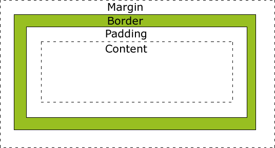

<!DOCTYPE html>
<meta http-equiv="Content-type" content="text/html;charset=UTF-8(编码格式)" />
<link rel="stylesheet" type="text/css" href="CSS外部样式表文件地址">
<script src="JS脚本地址"></script>
<html>
<head>
<title></title>
<style>
CSS选择器
</style>
...
</head>
<body>
...
</body>
</html>
标签有单个和一对的
<h1></h1>，1~6<p></p><ul>
<li></li>
</ul>
<l>
<li></li>
</l>
<table border="边框宽度">
<tr>
<th>列标题1</th>
...
<tr>
<tr>
<td>列数据1</td>
...
<tr>
</table>
<bottom></bottom><form action="按下提交后表单内容发送到的服务器位置">
<label for="对应input的id">(input元素定义标注)
<input type="text/password(隐藏输入)/radio(单选)/checkbox(多选)/submit(提交)" placeholder="输入内容提示，输入就消失" value="text输入时已经固定的输入值或者按钮中显示的值" name="规定 <input>元素的名称，用以引用JavaScript中的元素，或在提交表单后引用表单数据">输入框后对应的值
</form>
<b>加粗</b>
<i>斜体</i>
<u>下划线</u>
<s>删除线</s>
<br>换行，可以写在任意文本中或标签之间
<hr>分割线
<标签 class="类" id="id"
style="CSS的修饰">
<a href="链接"
target="新页面打开方式">文字，点击就会跳转</a>
<img src="图片地址"
alt="图像显示失败时的替代文本">
选择对象{
属性名:属性值;
...
}
选择器选择优先级id>类>标签
标签名{}.类名{}#id{}*{}选择全体父代(可以用上述三个) > 子代{}选择直接属于父代中的子代，比如
<div>
<p></P>
</div>
父代(可以用上述三个) 后代{}选择不直接属于父代中的后代，比如
<div>
<div>
<p></P>
</div>
</div>
基准(可以用上述三个) + 对象{}选择基准离最近的对象
对象(可以用上述三个):条件(伪类){}选择满足条件的对象，比如条件用hover时会对鼠标悬停的对象起作用
对象(可以用上述三个)::伪元素{}选中对象的伪元素
下面叙述除了基本的属性以外的内容
font:bolder 50px 'KaiTi'
display:inline/block/inline-block

float=left(左对齐)/right(右对齐)，会脱离标准流，也就是不占正常位overflow:hidden或者使用伪元素选择器让父元素自适应宽高
position:relative;
left: ;
right: ;
top: ;
bottom: ;
position:absolute
position:fixed
包裹在写于body中的<script></script>中
console.log();alert("")prompt("")返回值为输入内容document.write()var a;//函数作用域，全局变量
let b=0/"char"/null;//限定范围作用域，只在所处{}/script中可用，局部变量
const pi=3.14;//常量
与C相同
function name(参数){
...
return ;
}
//匿名函数，在用的时候才写
function(){}
//this作为函数实参表示函数触发时所在的位置
| 事件 | 描述 |
|---|---|
| onclick | 点击 |
| onmouseover | 鼠标经过 |
| onmouseout | 鼠标移出 |
| onchange | 文本内容改变 |
| onselect | 文本框选中 |
| onfocus | 光标聚焦 |
| onblur | 移开光标 |
<标签 事件(全小写)="函数名">
变量.事件=函数名变量.addEventLIstener('事件',函数名,True/False)
//最后的一个参数决定了事件传递方法
//默认False冒泡(先触发子元素)，True捕获(先触发父元素)
变量.removeEventListener('事件',函数名)
提供动态操作html结构的接口，每个html标签/属性/文本都是一个节点,最外部的是document
变量=document.getElementById/ClassName/Name/TagName(标签名)("")返回存储着对应元素的数组
变量.innerHTML = "内容"//内容可以被HTML解读，也就是说可以传标签
变量.innerText = "内容"//内容只作为纯文本，不会被HTML解读
常用方法
创建标签节点变量=document.createElement("p")
创建文本节点变量=document.createTextNode("文本")
返回指定属性值变量=变量.getAttribute("属性名")
appendChild()向某个节点添加文本/标签
var para = document.createElement("p");
var node = document.createTextNode("这是一个新的段落。");
para.appendChild(node);
var element = document.getElementById("div1");
element.appendChild(para);
var parent = document.getElementById("div1");
var child = document.getElementById("p1");
parent.removeChild(child);
var para = document.createElement("p");
var node = document.createTextNode("这是一个新的段落。");
para.appendChild(node);
var parent = document.getElementById("div1");
var child = document.getElementById("p1");
parent.replaceChild(para, child);
var para = document.createElement("p");
var node = document.createTextNode("这是一个新的段落。");
para.appendChild(node);
var element = document.getElementById("div1");
var child = document.getElementById("p1");
element.insertBefore(para, child);
<meta name="viewport" content="width=device-width,
initial-scale=1.0, minimum-sacle=1.0, maximum-scale=1.0",
user-scalable=no>width=device-width将视口宽度设置为设备宽度，确保网页不会被缩放scale将缩放比例固定在1user-scalable=no让用户无法缩放网页<script>
function resetHTMLFontSize(){
document.documentElement.style.fontSize = screen.size/10 + 'px'
}
resetHTMLFontSize();
windows.onresize=resetHTMLFontSize();
</script>
flex-direction =
row(横轴左起点)/row-reverse(横轴右起点)/colume(纵轴上起点)/colume-reverse(纵轴下起点)
flex-wrap = nowrap(不换行)/wrap/wrap-reverse
justify-content =
flex-start(对齐起点)/flex-end(对齐终点)/center(对齐中点)/space-between(两侧对齐起点终点，等间距排开)/space-around(与起点终点有间隔，等间距排开)
align-items =
flex-start(对齐起点)/flex-end(对齐终点)/center(对齐中点)/baselin(子元素的第一行文字基线对齐)/stretch(占满容器高度)
justify-content =
flex-start(对齐起点)/flex-end(对齐终点)/center(对齐中点)/space-between(两侧对齐起点终点，等间距排开)/space-around(与起点终点有间隔，等间距排开)/stretch(占满容器高度)